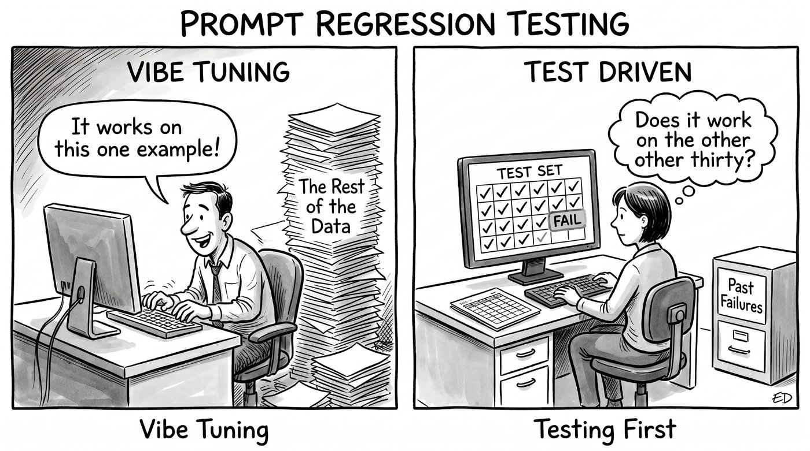

Write the Test Before the Prompt
There's a moment in every LLM project where I catch myself in the same loop. I change a word in the prompt, run it once, read the answer and think, "Yeah, that's better." Then I change another word. An hour later I've got a prompt that feels great on the one question I keep asking, and no idea whether it's better on anything else.
More recently, outside my day role, I've been spending more time on data science and AI engineering projects, and that loop is the trap I keep seeing. It's not a model problem. It's a testing problem.
Vibes don't scale
Reading one answer and judging it by feel is fine for the first ten minutes. After that it falls apart: you only see the example you picked, and you usually pick an easy one; a change that fixes one answer can quietly break another you didn't re-check; and you can't tell anyone, including future you, why version 7 beat version 6.
In data science we'd never accept "the model looks right on this one row." LLM work deserves the same holdout discipline, even if scoring is messier.

A tiny eval set goes a long way
You don't need a framework to start. My version is a plain table:
- Question: something a real user would actually ask
- Expected answer: what a correct response must contain, taken from data I trust
- Check: an exact match where possible, a "must mention X" rule where not, and a quick human read for the fuzzy ones
- Notes: why it failed last time
Twenty to thirty rows is enough. Include the awkward cases on purpose — ambiguous names, questions with no answer in the data, and ones needing two facts combined. Easy questions make every prompt look good.
Every tweak then gets retested against the whole set, not just your favourite example. That favourite is the worst judge you've got — it's the one you already know the prompt handles well. Run the lot, so you can see whether you got better overall, or just fixed one answer while breaking another.
Tie it back to the source
The ground truth should already be sitting in a table or document I trust. So when I ask an LLM a factual question, I'm not guessing whether it's right. I compare it to the source. If the model says 12 and the source says 9, it fails. No partial credit for sounding confident.
That's the same reconciliation habit from my accounting days: tie the answer back to the source before you trust it.
Keep the failures
The best rows are the ones that failed. Every time the model gets something wrong in a surprising way, add it. Over time the set records every mistake you've already fixed, so they can't creep back in when you change the prompt, model or retrieval.
The boring bit I have to plan for
I'll be honest: I find this retesting painfully boring. Running the same questions again, checking the same kinds of answers again, is not the part of building I look forward to.
I've also learned there is no other way around it. So I often plan this activity in advance, as its own job. If I plan it, and I have the mindset that "tomorrow, I will do this stuff", my mind is better prepared. It stops being the tedious thing I tack on at the end of a good session, and becomes the job itself.
That's where I'm living it with Hey Hugh, a learning app I'm building. I need to determine whether the curated syllabus is actually consistent, not just whether it looks consistent at a glance. To help, I apply an entropy score — a way to flag inconsistency and unevenness, rather than relying purely on feel.
It doesn't make the checking exciting, but it does make the retesting more targeted — the score points me to where a closer look is needed. The discipline is still boring, and still has to be planned, but at least I know where to aim it.
Where this leaves me
The model is usually the least of the problem. The question is whether you can prove a change made things better, and a small, honest test set is the cheapest way I know to do that. Write it first. Then write the prompt.